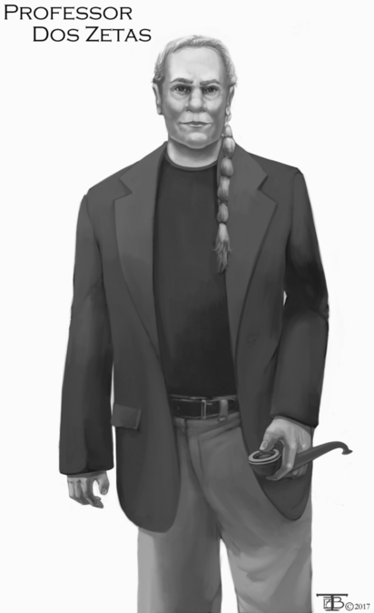
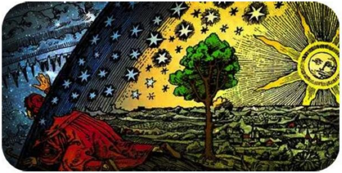

Welcome All!
The Slipstream Express will shortly be pulling into the station, but meantime a few words about the itinerary.
For those that savor quality time off the grid and are comfortable with the old school practice of reading at length, you will strike a gold vein of dazzling literary adventure should you opt to board the Slipstream Express. Consider it a bucket list expedition akin to sailing solo to all the world’s ports of wonder…known and unknown, real and fabled.
If you harbor a curiosity about the dynamics of mysterious activities and quirky incidents that occasion to mingle into our otherwise mundane existence, i.e., that space alien living next door to you, or Siri calling to ask you questions, or maybe your washing machine sucks you inside, spins you like a top and spits you out the dryer…proceed to the observation car for a enlightening preview of things to come.

However, should you be dogged by angst and dread, alarmed about shadowy, powerful forces in high places secretly watching and listening in on everyone everywhere while they stealthy manipulate world events in real time, please take a seat in the conference car. Listen to Dr. Panda Head’s informative overview, highlighting the progress his special ops team has made in dismantling the transnational cabal’s brain trust (aka NOVORUM), which is responsible for much of the fear and loathing in today’s world.
Notwithstanding, while the crusade against ill-intentioned forces is a reoccurring theme throughout the odyssey, the side jaunts are equally compelling. The voyage stretches from the obscure nebulae of Knowhere to the storied Sea of Tranquility, past the Archipelago of Quantalandia to the shores of Shambhala. The route less traveled is never-ending, as yet a still unmapped territory filled with wonder and awe. Please remember to keep your arms inside the Express cars at all times thank you.
Special guests include a space-alien created artificial intelligence giving an explicatory talk on the source of the celebrated Philosopher’s Stone. It will also expound upon the enigma of Dark Something, last surviving remnant from before the Big Bang.
For your security a motley posse of peculiar characters will escort you through the alternate universe that is patently strange, but what is stranger than that…is how much it resembles our own world.
There are neither happy endings nor sad endings to my tales, reason being, there are no endings, the spin goes on and on, taking on a life of its own, not unlike the ceaseless spin of our planet as it endlessly orbits our life giving sun.
The insights you will gain from the tales I share are assuredly relevant in today’s world…and tomorrow’s. Gradually, one page at a time, a sweeping panorama will expose the bigger picture of our world. Surprisingly it is not a glorious landscape, but rather an edgy vista of our surreal zeitgeist.
Caution: At all times expect the unexpected, for the vagaries and vicissitudes of the journey is relentless.
Tickets sold on the Contact page.
Bon Voyage!
